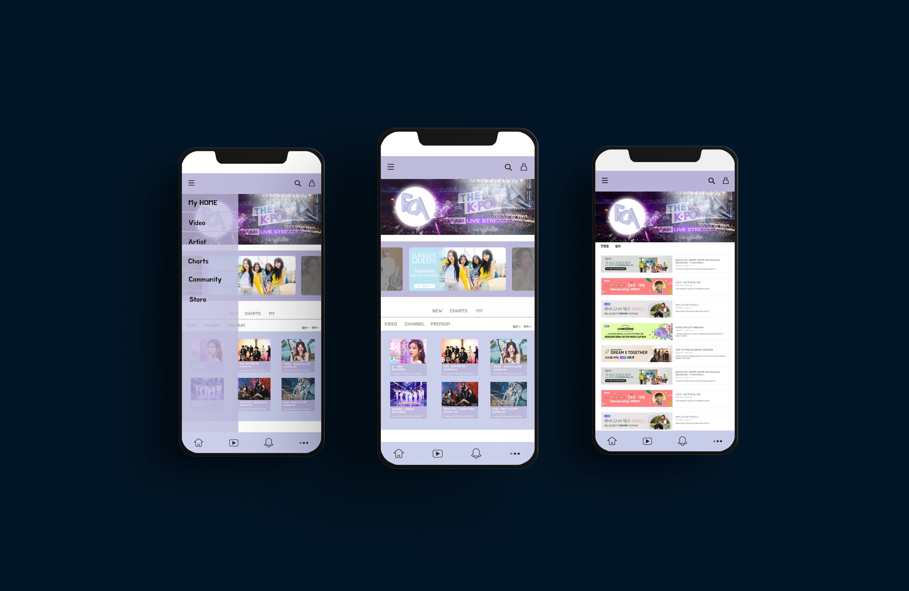
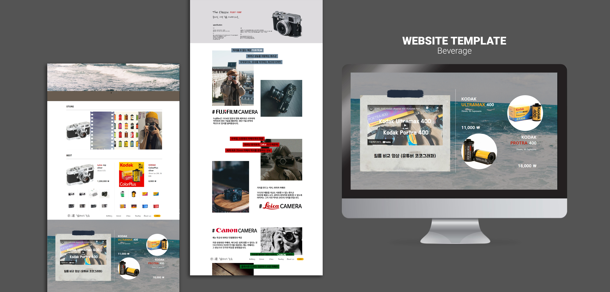

FOA.COM - Fan Of Artist
기획의도
코로나 19로 자택에 있는 시간이 늘어나 개인 취미생활로 미디어를 접할 기회가 증가함과 동시에 4~50대의 미디어 소비가 증가.
트롯 열풍이나 희망돌이라 불리는 모 아이돌 그룹 등의 이유로 기성세대의 미디어 소비는 증가하였으나 미디어에 익숙하지 않은 기성세대를 위하여 10대,20대와 정보를 공유할 수 있고 좀 더 편한 UI/UX 디자인으로 미디어를 소비할 수 있는 사이트를 기획.
필름 현상소 필;름
기획의도
아날로그와 레트로에 대한 관심은 증가하지만 점점 줄어들어가는 필름 카메라 현상소와 필름 판매소의 문제를 해결하기 위하여 온라인 현상소와 필름 카메라 제품 판매 사이트를 기획.
아날로그적인 색감을 활용하였고 종이질감의 배경을 사용하였음.